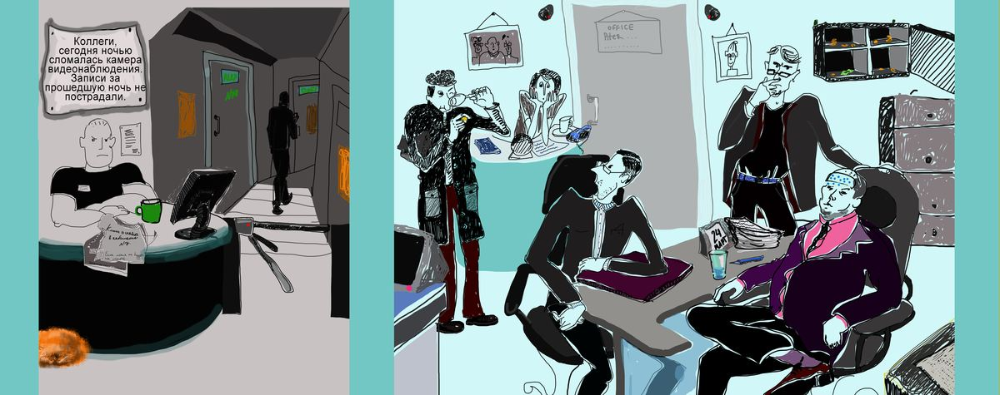

*Кликните на картинку, чтобы отобразились улики.
Ограбление сейфа
Был вскрыт сейф, сигнализация не сработала. Доступ к отключению сигнализации утром имеет только Алекс. Поэтому
если сигнализация работала и преступление произошло не ночью, то Алекс преступник.
Брюс всегда включает сигнализацию, когда уходит с работы, в отличие от остальных -
остальные постоянно забывают это делать.
Вчера на работе были Карл, Дилан и Брюс.
Сегодня утром на работу пришли Алекс, Карл и Дилан.
Вчера было чётное число, по чётным числам Брюс уезжает раньше всех в типографию.
По нечетным происходит наоборот.
Ночью камеры не работали и сейф не контролировался.
Если Карл ушёл последним и пришёл утром, то он преступник.
Если Брюс ушёл последним и преступление произошло ночью, то он преступник.
Если Дилан ушёл последним и пришёл утром, то он преступник.